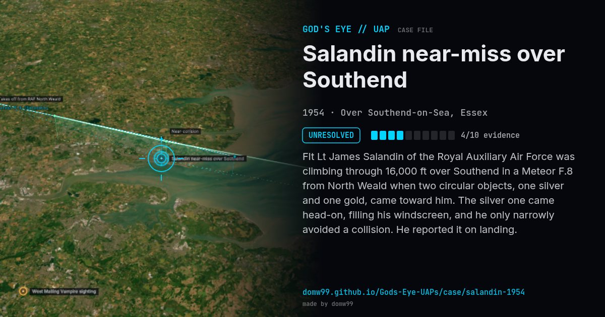

Salandin near-miss over Southend
UNRESOLVED

Flt Lt James Salandin of the Royal Auxiliary Air Force was climbing through 16,000 ft over Southend in a Meteor F.8 from North Weald when two circular objects, one silver and one gold, came toward him. The silver one came head-on, filling his windscreen, and he only narrowly avoided a collision. He reported it on landing.
What was seen
Shape: Two circular objects, one silver and one gold
Witnesses: 1 (Flt Lt James Salandin, No. 604 Squadron)
Duration: Seconds
Sources
Browse
- United Kingdom
- 1950s
- Unresolved
- Aviation encounters
- Military witnesses
- Pilot and aircrew witnesses
- Spheres and orbs